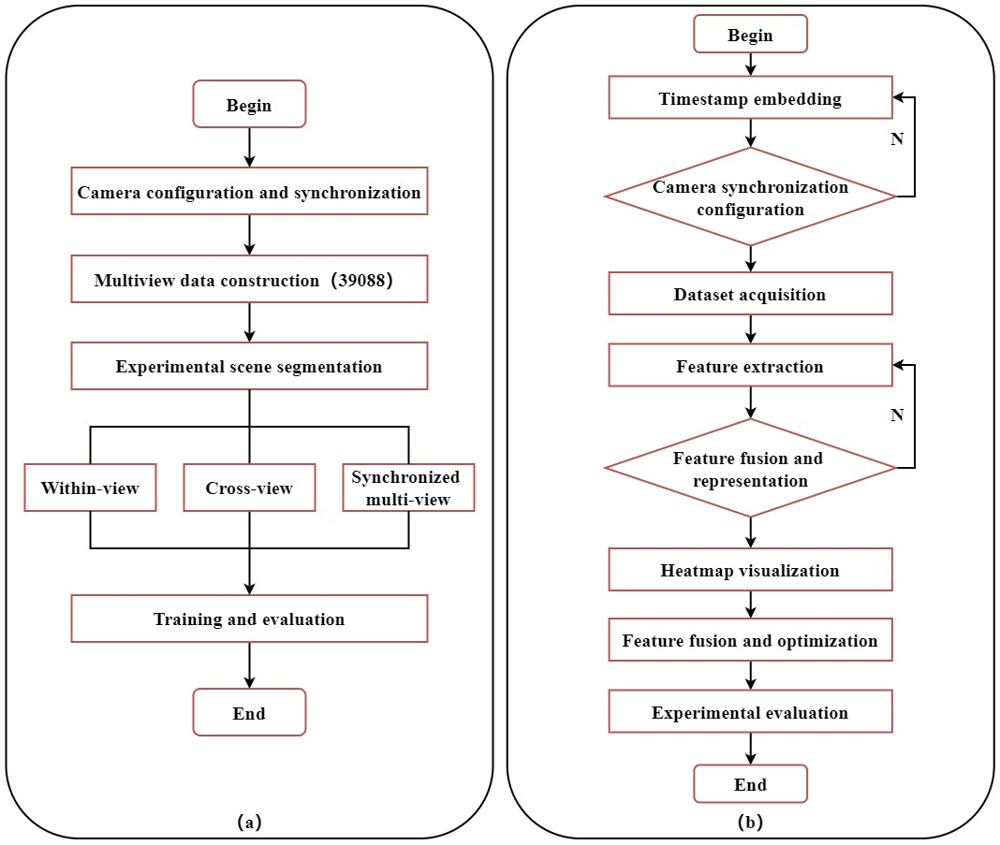

1SANYA Oceanographic Institution, Ocean University of China, Sanya, China
2College of Electronic Engineering, Ocean University of China, Qingdao, China
Pipeline of an end-to-end fish re-ID system. It consists of two modules: detection and fish recognition.
Abstract
Fish re-identification(re-ID) is crucial for fish monitoring and can further promote aquaculture and fish breeding. Consequently, we have taken the first step in fish re-identification efforts. Synchronizing information from different cameras can accelerate or optimize re-identification performance. We constructed the first underwater fish re-identification benchmark dataset (FS48) under three camera conditions to promote the development of underwater re-identification. FS48 includes 48 different fish identities, 10,300 frames, and 39,088 bounding boxes, covering different lighting conditions during day and night and occluded and unoccluded background environments. We developed the first robust and accurate fish re-identification baseline, FSNet, which fuses information from three camera positions. FSNet extracts features from synchronized video frames from each camera position and fuses the synchronized information from the three positions. By combining information from three positions, FSNet achieves better re-identification performance. Our fish re-identification baseline helps improve overall re-test accuracy and evaluate the effectiveness of re-identification among detectors. Experimental results demonstrate that FS48 is universal and high-quality, and FSNet has an effective network design and good performance.
Pipeline of Mixed Three Views (FSNet). Directly splice the images together and perform feature extraction using Backbone. Then, perform overall feature fusion.
Flowchart

Overall Fish Re-identification (Fish ReID) Flowchart: Experimental Setup for Multi-view Re-identification (a) and Techniques for Multi-view Video Synchronization and Feature Extraction.
Citation
@article{fan11take,
title={Take Good Care of Your Fish: Fish Re-identification with Synchronized Multi-view Camera System},
author={Fan, Suzhen and Song, Chengyang and Feng, Haiyang and Yu, Zhibin},
journal={Frontiers in Marine Science},
volume={11},
pages={1429459},
publisher={Frontiers}
}
Acknowledgements
This work was supported by the Key Special Project of the National Key Research and Development Program of China under Grant No. 2022YFD2401304; the Project of Sanya Yazhou Bay Science and Technology City Grant No. SKJC-2023-01-004 and the finance science and technology Q19 project of 630 Hainan province of China under Grant No. ZDKJ202017.The website is modified from this template.
Note
This website was created by Chengyang Song on October 19, 2024. For any inquiries, please contact songchengyang@stu.ouc.edu.cn.